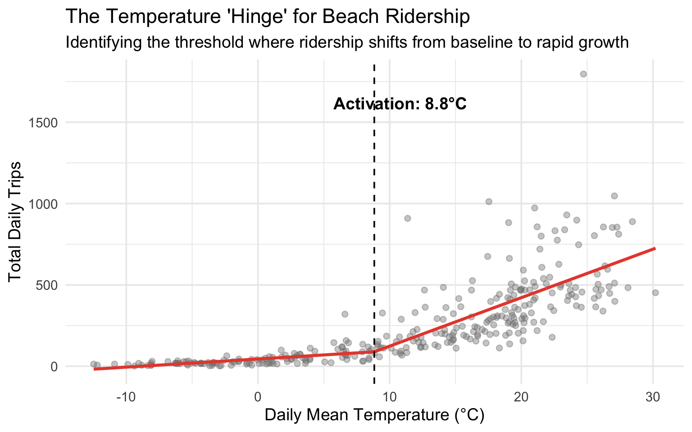
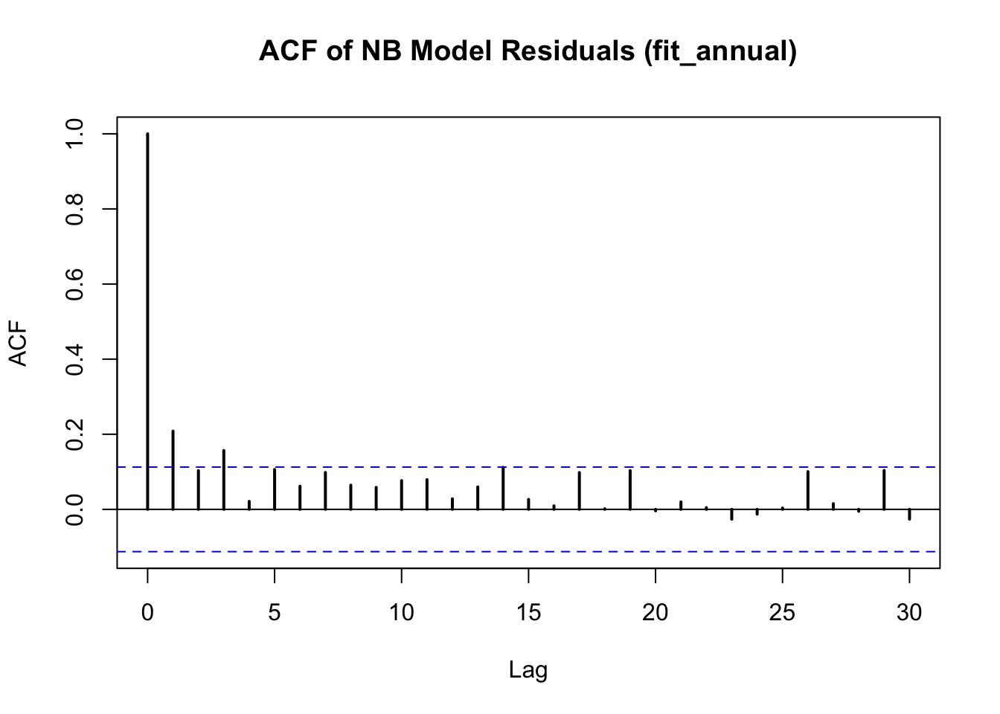
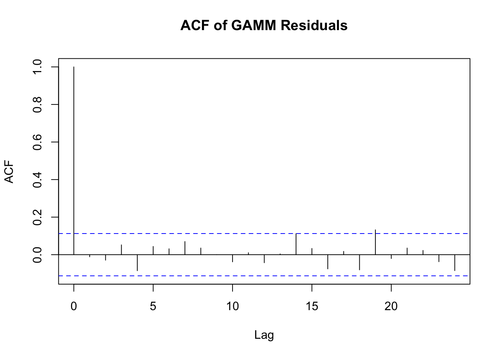
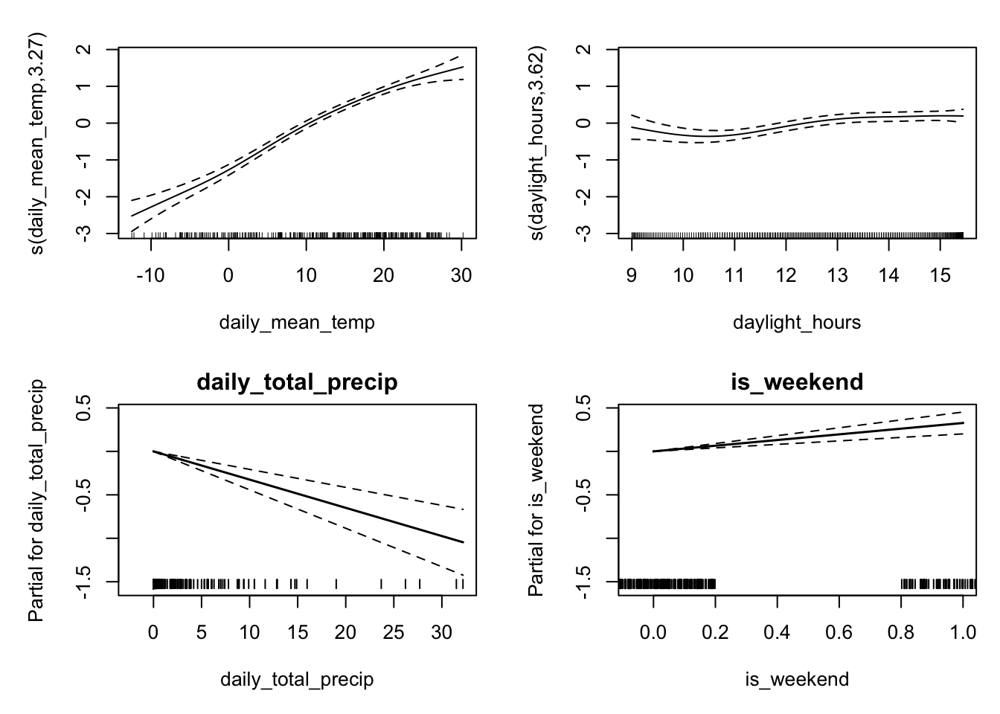
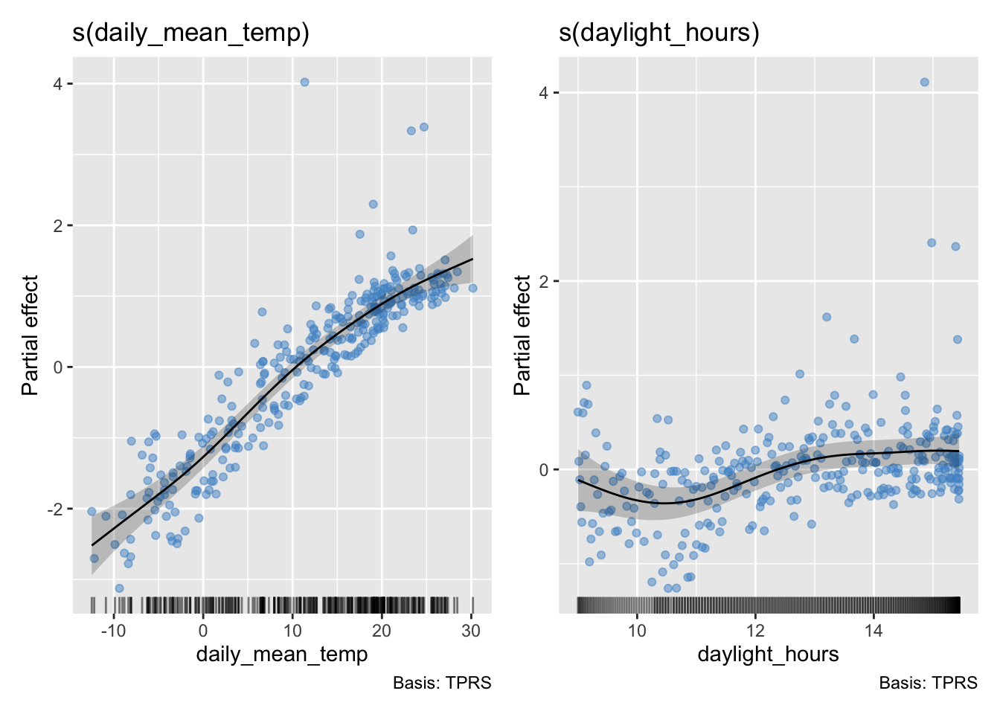
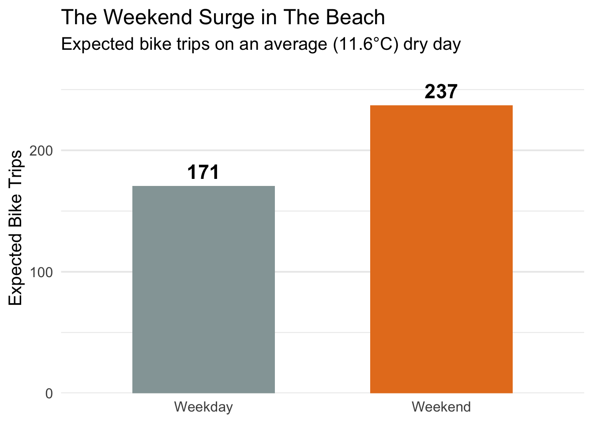
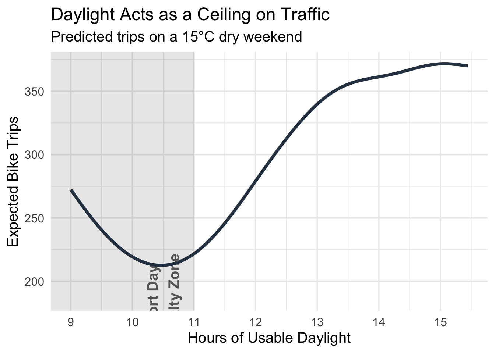
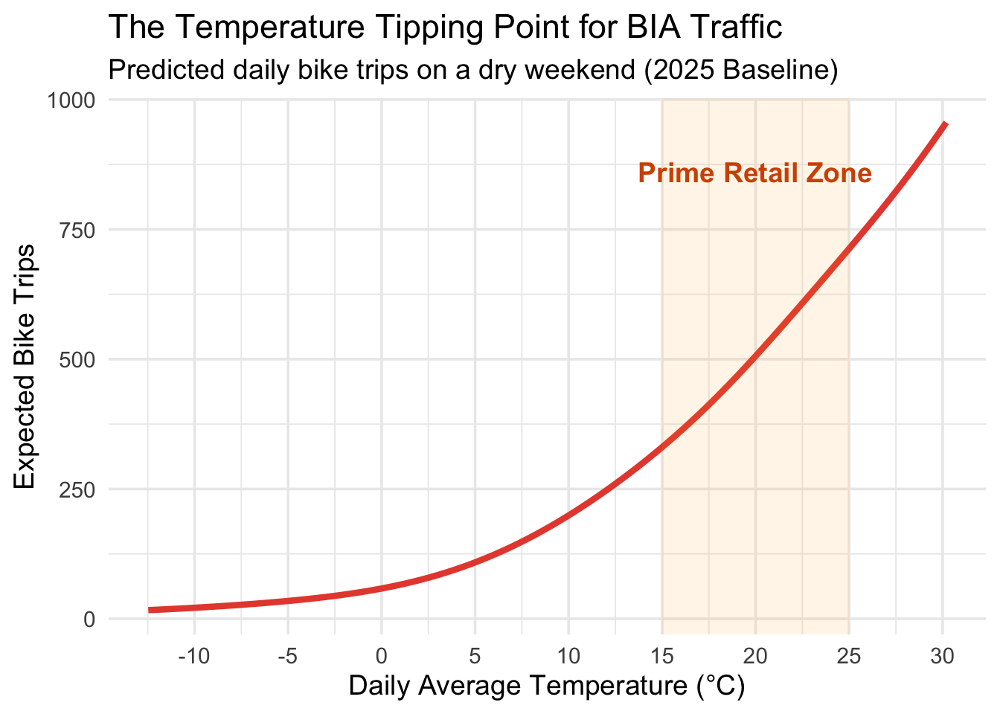

Modelling Bike Activity within The Beach BIA
| Term | Rate Multiplier (Exp) | P-Value |
|---|---|---|
| Baseline (Intercept) | 12.2153009 | 0 |
| Mean Temperature (°C) | 1.0985060 | 0 |
| Total Precipitation (mm) | 0.9661481 | 0 |
| Daylight Hours | 1.1115702 | 0 |
| Weekend Indicator | 0.9980902 | 0.9829 |
| Temp x Weekend Interaction | 1.0265955 | 0 |
Maximum number of PQL iterations: 20 
Maximum number of PQL iterations: 20
Family: negative binomial
Link function: log
Formula:
total_trips ~ s(daily_mean_temp) + s(daylight_hours) + daily_total_precip +
is_weekend
Parametric coefficients:
Estimate Std. Error t value Pr(>|t|)
(Intercept) 4.927638 0.039612 124.399 < 2e-16 ***
daily_total_precip -0.032474 0.005883 -5.520 7.48e-08 ***
is_weekend 0.327130 0.062886 5.202 3.71e-07 ***
---
Signif. codes: 0 '***' 0.001 '**' 0.01 '*' 0.05 '.' 0.1 ' ' 1
Approximate significance of smooth terms:
edf Ref.df F p-value
s(daily_mean_temp) 3.273 3.273 126.068 < 2e-16 ***
s(daylight_hours) 3.615 3.615 5.551 0.000288 ***
---
Signif. codes: 0 '***' 0.001 '**' 0.01 '*' 0.05 '.' 0.1 ' ' 1
R-sq.(adj) = 0.732
Scale est. = 0.22529 n = 303




| Term | Rate Multiplier | P-Value |
|---|---|---|
| Baseline | 97.5027932 | 0 |
| Mean Temperature (°C) | 1.0696525 | 0 |
| Total Precipitation (mm) | 0.9768034 | 2e-04 |
| Weekend Indicator | 1.7342146 | 0 |
| Beach Closed (Indicator) | 0.8598918 | 0.1573 |
Call:
glm.nb(formula = total_trips ~ daily_mean_temp + daily_total_precip +
daylight_hours + is_weekend + daily_mean_temp * is_weekend,
data = model_data_2025, init.theta = 5.689304319, link = log)
Coefficients:
Estimate Std. Error z value Pr(>|z|)
(Intercept) 2.502689 0.222551 11.245 < 2e-16 ***
daily_mean_temp 0.093951 0.004161 22.578 < 2e-16 ***
daily_total_precip -0.034438 0.005404 -6.372 1.86e-10 ***
daylight_hours 0.105774 0.019613 5.393 6.92e-08 ***
is_weekend -0.001912 0.089448 -0.021 0.983
daily_mean_temp:is_weekend 0.026248 0.005532 4.745 2.08e-06 ***
---
Signif. codes: 0 '***' 0.001 '**' 0.01 '*' 0.05 '.' 0.1 ' ' 1
(Dispersion parameter for Negative Binomial(5.6893) family taken to be 1)
Null deviance: 2175.29 on 302 degrees of freedom
Residual deviance: 322.73 on 297 degrees of freedom
AIC: 3352.9
Number of Fisher Scoring iterations: 1
Theta: 5.689
Std. Err.: 0.500
2 x log-likelihood: -3338.895 (Intercept) daily_mean_temp
12.2153009 1.0985060
daily_total_precip daylight_hours
0.9661481 1.1115702
is_weekend daily_mean_temp:is_weekend
0.9980902 1.0265955 